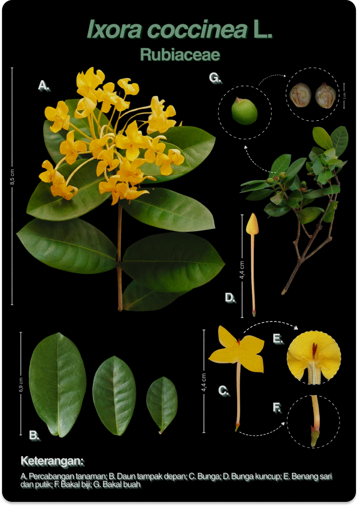

Ixora coccinea L.

Deskripsi
| Batang | Batang berkayu (lignosus), bentuk batang bulat (teres), permukaan batang memperlihatkan bekas-bekas daun, arah tumbuh batang tegak lurus (erectus), percabangan batang simpodial, batang bercabang banyak membentuk semak. |
|---|---|
| Daun | Daun tunggal, susunan daun berhadapan, bentuk daun jorong (ovalis atau ellipticus), ujung daun runcing (acutus), pangkal daun tumpul (obtusus), tulang daun menyirip (penninervis), tepi daun rata (integer), warna daun hijau, permukaan daun licin (laevis) dan mengkilat (nitidus). |
| Bunga |
Bunga majemuk (anthotaxis atau inflorescentia), simetri bunga setangkup menurut dua bidang (bilateral simetris).
Bagian-bagian bunga:
|